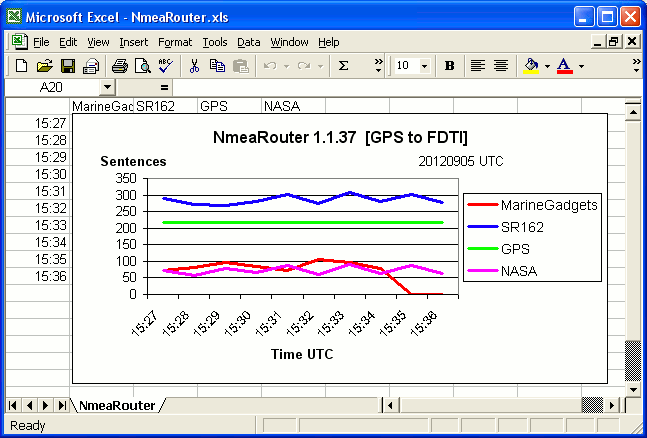
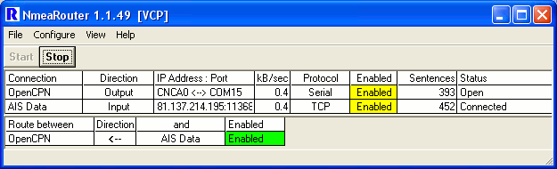
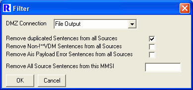

by Neal Arundale
I would be pleased receive comments, suggestions or bugs (See Contact Me).
AIS/NMEA Router Latest Version
A Source or a Destination is called a Connection.
Connections can be External to the PC (for example a Serial/USB or Network) or Internal (for example a File or a Display Window).
A Source is linked to a Destination by a Route (for example the data from an AIS Receiver being routed to an AIS Chart Display).
The program has been developed with AIS data in mind, AIS data is encapsulated within one type of NMEA sentence.
There are hundreds of different NMEA sentences of which AIS and GPS data are but two, so the Router should handle any data conforming to NMEA standards.
Get Started
After installation, when run you will see this window displayed (initially with no entries in the tables).

The Menu Bar has four options - File, Configure, View and Help.
| 1. | Make a Connection to a data Source Configure > Connection > New > Select the type of connection > Select Input. If data is currently being received (1>) from the Source you will see the data in the lower pane. |
| 2. |
Make a Connection to a Destination Configure > Connection > New > Select the type of connection > Select Output. |
| 3. |
Make a Route between the Source and the
Destination Configure > Route > New > Select the Source and Destination added in steps 1 and 2. If the Route has been added successfully you will see the data being output (<2) in the lower pane. |
Connections
Connections may be Input, Output or both.
You can name the connection to your own name, but once named cannot rename it without deleting and re-creating the Connection
Not all options are applicable to all types of connection.
Connections may be disabled.
All Data input is Time Stamped as soon as it is received into NmeaRouter. The time stamp uses the UNIX time format which is defined as the number of seconds that have elapsed since midnight Coordinated Universal Time (UTC), January 1, 1970. This is the same as the time stamp used by IEC 61162-1.
Data may optionally be output with the Time stamp, Source and Destination added. This is done in accordance with the IEC 61162-1 standard which is the standard for NMEA, AIS and GPS using the PC's UTC time, and the name you have given to the Source and Destination Connections.
Comment blocks are decoded by AisDecoder.
For example:
\c:1336737548,d:Data Input Log,s:SR162 Receiver*4A\!AIVDM,1,1,,A,33MUhl?00pOwQgfOAU;oJmqn0000,0*2A
Selecting Only NMEA will remove any data preceding the $ or ! on any NMEA sentence. Any NMEA comment block (including the IEC 61162-1 comment block) will also be removed. It will also remove any proprietary time stamp information which may precede the NMEA sentence and is sometimes added by base stations.
If you tick neither output option, the data output to the destination will be the data that has been received at the source.
Ticking either box has no effect on any data being input (if any) on the connection.
If you enter an MMSI in OwnShip MMSI any AIS sentence from this MMSI will be changed from AIVDM to AIVDO.
This will be interpreted by chart plotters as being your own vessel. In addition the last position sentence received will be repeated every 2 seconds for 2 minutes, or until another position report for you vessel is received. This has the effect of "spoofing" your own vessel when a PC does not have a direct connection to the vessel's own network data. This only affects data being sent to an Output Destination.
| UDP/TCP |
A TCP/IP Network or Internet
Connection Options vary dependent on UDP or TCP and if TCP whether the Connection is acting as a Client or a Server. To setup for Data Streamed over the internet use TCP Client - for an example try hd-sf.com IP 207.7.148.21 Port 9009 (see image below) Multi-Client TCP connections are now handled. You must set the maximum concurrent connections you will allow to the same port. |
| Serial |
A connection made to a Windows Com
Port. All currently enabled Serial and USB Com ports should be listed. If you do not see the Port/Device you are trying to connect to try View > Serial Ports which will list all the Ports NmeaRouter knows about. If you still cannot see the Port/Device, look at the windows device manager. Start > Control Panel > System > Hardware > Device Manager > Ports (Com & LPT). Note that USB ports are allocated by the actual USB device you are using, which is set by the Device Driver supplied with the actual USB device and not by Windows. Particularly with low priced USB devices, these drivers are not always reliable and the Com port allocated to a device can change. Most USB Devices use either the FDTI chip or the Prolific chip. The FDTI appears much more reliable in particular because the Prolific chip has been extensively "cloned" and if you upgrade the driver, you may find the cloned chip stops working. For further information see Prolific and FDTI . |
| File |
Input from or Output to a File. You cannot have the same file open for both input and output. If Roll Over is selected (only applicable to output files), the file will be named yourname_YYYYMMDD.yourname At Midnight a new file will be stated with the new date. With Input files you can select the maximum rate at which the sentences will be read from the file. This allows you to slow down the output. You will also be given an option to Pause the input (re-starts from the file position when paused). |
| Display |
Opens a separate Display Window to
display the data routed to this window |
| Loop Back |
Allows data to be looped back from the
Output of a connection to the Input on the same Connection primarily
for testing |
Routes
Right Clicking Enabled or Disabled toggles enabling of disabling the route.
Menu Options
| File |
|||||||
| Test |
Generates Test Sentences | ||||||
| Exit |
Saves the profile and Quits NmeaRouter | ||||||
| Configure |
|||||||
| Profile |
A Profile is a snapshot of your current
configuration, which may be restored later |
||||||
| New |
Start a New Profile |
||||||
| Open |
Close the existing configuration
re-starting with a saved profile |
||||||
| Save |
Save the current profile |
||||||
| Save As |
Save the current profile with a new
name |
||||||
| Delete |
Delete the current profile |
||||||
| VCP |
Virtual Com Ports for use when 2 programs on the same PC
require access to the same Com port |
||||||
| Create |
Creates a Com Port pair |
||||||
| Remove |
Removes a Com Port pair |
||||||
| Connection |
|||||||
| New |
Opens a new connection for editing the
settings |
||||||
| Open |
Open an existing connection for editing
the settings |
||||||
| Delete |
Close and remove an existing
connection |
||||||
| Recorder (V50) |
|
||||||
| Route |
|||||||
| New |
Create a new route between two
connections |
||||||
| Open |
Open a current route and change the
route settings |
||||||
| Delete |
Close and remove an existing route |
||||||
| Filters (V50) |
Remove duplicated Sentences from all Sources (Input
Connections) |
||||||
| Graph (V36) |
Set Range and Period for Excel Graph |
||||||
| Export |
Export the current configuration to a
file |
||||||
| View |
|||||||
| Input/Output |
|||||||
| Data |
Toggles show/noshow the Data display in
the lower window pane |
||||||
| Connections |
Toggles show/noshow the Connections
display in the upper window pane |
||||||
| Routes |
Toggles show/noshow the Routes display in the upper window pane | ||||||
| Graph (V36) |
Toggles show/noshow the Graphical display of sentences
by Connection |
||||||
| Connections |
Displays details of current
Connections |
||||||
| Routes |
Displays details of current Routes | ||||||
| Forwarding |
Displays details of current active
Forwarding |
||||||
| TCP/IP Sockets |
Displays details of current Network
Sockets |
||||||
| Serial Sockets |
Displays details of current Serial
Connections including Virtual Com Ports |
||||||
| File Sockets |
Displays details of current File
Connections |
||||||
| Display Sockets |
Displays details of current Display
(TTY) Windows |
||||||
| Event Log |
Displays the current sessions events (eg Port Opening
and errors) |
||||||
| Registry |
Displays details of current Registry
settings |
||||||
| Help |
|||||||
| Help |
Display these instructions |
||||||
| Contact Me |
Email me & testing Registration option |
||||||
| About |
Copyright notice |
Mouse Options
| Edit Connections or Routes |
To get the New/Open/Delete menu for
Connections or Routes, right click on the Connection name or the Route
name in the leftmost column of the appropriate display. |
| Toggle Enabled/Disabled |
Right Click on the Enabled/Disable cell
on the Connections or Routes display. To Toggle all the Enabled/Disable cells, right click on the heading of the column. |
| Clear Sentence Counters |
Right Click on the Sentence count. To Clear all Counters, right click on the heading Sentences. |
Excel Graph of Connection Sentences Received (V36)
The graph for all connections is generated automatically if Options > View > Input/Output > Graph is ticked.
It is embedded in an Excel spreadsheet, allowing you to save the Workbook, and reformat the graph.
Before altering the graph, you should stop NmeaRouter and Save the Graph (before exiting NmeaRouter), to ensure NmeaRouter is not trying to update at the same time as you are trying to alter the Graph, otherwise you may get unexpected results.

Connecting to Data Streamed over the Internet
Try ais.exploratorium.edu who stream data from San Francisco Bay area on TCP port 80
If you are not seeing any data, confirm data is being received by your PC, type ais.exploratorium.edu in your browser.
Command Line Options & Minimising to System Tray (V41)
Click Minimise to send to System Tray
Right Click on systray Icon to Restore or Exit
If Exit from Icon in systray when re-run application will restart in systray
If Exit from Graphical User Interface (GUI) when re-run application will restart in GUI
Command Line Options (not case sensitive) are:-
systray (Overrides profile setting)
Profile=ProfileName
If ProfileName includes spaces include ProfileName in Double Quotes
Separate Command Line options with Forward Slash (/) (do not use / in profile name)
Example: dos Prompt> NmeaRouter.exe systray/profile="TCP Client 1"
Command Line Options & To Start NmeaRouter Automatically on startup (V41)
-
Click the Start button, click All Programs, right-click the Startup folder, and then click Open.
Using Windows Explorer, locate C:\Program Files\Arundale\NmeaRouter\NmeaRouter.exe.
Right-click NmeaRouter.exe, and then click Create Shortcut. The new shortcut appears in the same location as the original item.
Drag the shortcut into the Startup folder.
Additionally to Start NmeaRouter in the system tray and/or to Specify a
Profile (otherwise the latest profile will be used).
- Right-click the shortcut, and then click properties.
- At the end of Target
Add /systray/profile="My Profile Name"
There is a space after .exe and if your profile name contains spaces, it must be enclosed in quotes.
Understanding UDP & TCP
AisDecoder will not output TCP data only UDP
Nmea Router will output TCP and UDP data acting as either a Client or a Server.
For the sake of clarity, both append a CRLF (this is part of the NMEA spec)
UDP is a connectionless protocol, which means you just send the data (like a radio broadcast) and you are not interested in whether the recipient receives the data or not.
The data is One Way only.
TCP guarantees receipt of the data by the recipient by confirming back to the sender as "chunks" of the data have been received. TCP is therefore Two Way, data can and does flow in both directions and receipt is guaranteed. For example an internet connection between your web browser and a web server actually uses TCP, enabling you to both send and receive data. FTP and HTTP also use TCP.
Although TCP itself uses UDP, you cannot use TCP at one end and UDP at the other.
Assuming you are trying to make a TCP connection, you need to be clear as to who is going to make the initial connection. Think of a telephone, one party makes the initial connection by calling the other party. In internet terminology the called party "listens" and is the Server, the calling party, initiates the connection and is the Client. Like a telephone, once both parties have picked up the phone, the conversation (data) can travel in either or both directions.
Both a TCP Server and a TCP Client can send data to another party. Whether you are the Server or the Client depends on who is making the first contact. Are they waiting for their phone to ring, or, are you waiting for their call to you ?
NmeaRouter setup if you are the Client and they are the server
You will note that if you are the Client, you must enter their IP Address and their Port.
They will give you an IP address (or URL) and a port on which to make contact, ANDtheir firewall must allow an incoming TCP connection from your IP address on their port.
NmeaRouter setup if you are the Server and they are the Client
You will note that if you are the Server, you only enter the Port you wish to use.
You will tell them this Port, ANDyour firewall must allow anincoming TCP connection from their IP address on your port.
Your Router must also forward incoming TCP on this port to your PC
In both cases the data direction is Output, because you are sending them the data.
The direction is only used by NmeaRouter for sentence routing, it is not relevant for the actual TCP connection between the Client and Server.
Continuing with the telephone analogy, each party wishing to talk to one another can use multiple phone lines in order to conduct several conversations at the same time. These are the "Ports". Both parties must us the same port, otherwise they will not actually be a connection between themselves. Similarly three or more parties cannot use the same port, otherwise the conversations would be jumbled on top of one another.
So how do more than two Clients receive the same data from one Server ?
The Server actually uses One port as a "Listening Port", the initial connection is made on this port, but having made this initial connection the Client and Server negotiate a mutually agreed port that is available on both Client and Server, then switch the connection from this Listening Port, to the mutually agreed port, on which the actual data transfer continues.
This allows another Client to make a second connection to the Server.
NmeaRouter makes the port switching and re-routing transparent to you.
This is the same procedure as is used in radio communications between Ships or Aircraft. All Parties listen on the "Calling Channel". The initial contact is made on the "Calling Channel", the parties agree a "Working Channel" and both then move to the Working Channel.
TCP Multi-Client Server (V43)
This enables you to distribute data received by one PC to multiple PC's either
locally or remotely via the internet.
When you set a TCP server port (eg 11367), this port is set a a "listening"
port, awaiting a TCP connection request.
If Client tries to make a connection to the Server on this port (eg 11367), the
Server will "spawn" another connection.
The spawned connection inherits the routeing of the "Listening" port.
The server recommences "listening" on the port (11367) allowing it to set up
another connection to a second Client, should it be requested. This will
continue up to the limit of Maximum Concurrent Connection set when the Server
was configured.
This enables multiple Clients to be given the same socket to connect to the
Server on which to receive the data.
You you can set up another instance of NmeaRouter on the same PC to try this -
set the remote host IP as 127.0.0.1 which translates to the local PC.
Routing to a Program which only accepts Serial Data - Virtual Com
Ports
Some programs (note OpenCPN now accepts
network data) will only accept serial data, or possibly proprietary network
data such as Garmin or Json as well. These programs expect your PC to be
physically connected to serial or USB port.
If you attempt to connect two programs to the same physical port (eg
COM4) at the same time, your PC will prevent this, and you will receive an
error message such as “port in use”.
From V46, you can overcome this problem by creating a Virtual Com Port Pair
(VCP) with Connection > New > VCP > Create
You can see the created VCP with View > Serial Sockets
The Serial Socket CNCA0 is linked to COM15
A Serial Connection called OpenCPN is created using Port CNCA0
A Route is created between the incoming data (AIS Data) and OpenCPN
Data arriving on the Connection AIS Data will appear to be Output on COM15.
If the OpenCPN Chart Plotting program is started using COM15 as the Input, the
AIS Data will displayed on the OpenCPN program.

For more details see Guideline on installing and
connecting NmeaRouter on a Windows computer with OpenCPN or any other program
only accepting Serial Data.
Filters
Remove duplicated Sentences from all Sources (V53)
The main purpose is to reduce network bandwidth when NmeaRouter is used to
combine several differing Sources of data.
This filter monitors the input from all source connections. If an identical
sentence is received, possibly/probably from a different source, the duplicated
sentence is rejected and not passed forward to any Destination.
The previous 6 minutes of received sentences are compared with each received
sentence..
Multi-part messages are subject to additional "special" handling.
To insert this filter click Configure > Filters and Tick the box.
All sentences filtered out are sent to a Demiliterized Zone (DMZ), in a similar
manner to an internet router.
These sentences can be forwarded to any existing Output Connection. For
example, you can set up a File Output Connection to write the duplicated
sentences to a Log file.

In addition you can see the Source of the duplicated sentences by adding IEC
61162 comments to the output.
The Log File will contain the commented sentences
\c:1369230289,d:File Output,s:Home
TCP*30\!AIVDM,1,1,,B,35DrjF5000Ow5M8NdHD2Mb9T0000,0*12
\c:1369230289,d:File Output,s:Home
TCP*30\!AIVDM,1,1,,A,33P;J:03A@P1Ku@O6<bu0bQV0000,0*27
\c:1369230289,d:File Output,s:Home
TCP*30\!AIVDM,1,1,,B,34VgUR0OhA01nk8NsH<dVrIV0000,0*68
Output Recorder Currently on test - for further
details click
Other Information
I intend integrating AisDecoder with
NmeaRouter in the future by plugging in AisDecoder into NmeaRouter.
This requires re-writing AisDecoder as a stand alone module, with the ability
to plug-in to other software.
There is a limit of 10 on most of the options. This is because I may release an
unrestricted (commercial) version of NmeaRouter in the future.
Version History
V67
W7 Source
V3.66
If downloaded new version setup fails to execute (virus checker), do
not terminate NmeaRouter
V66 Copyright notice changed to keep lawyer's happy
Overflow error on 32bit CPU ticks [hopefully fixed)
V65 Overflow error on 32bit CPU ticks [fixed)
V64 Optional accept single <LF> or <CR> or missing as Nmea
Terminator on network connection
V63 Changes to support optional suppression of Nmea Terminator error
message
Windows could prompt on exit after system forced exit [fixed]
"dontqueryexit" command removed
V62 If New Connection created when STOPped, New Connection was not Stopped
[fixed]
Serial Input synchronised with AisDecoder
MSINET.OCX now included in setup distribution
V61 Moved to arundale.com website
New Command Line Argument "dontqueryexit"
V60 Font changed to fix formatting on recent windows installations
OwnShip not copied to TCP server socket [fixed]
Partial UFO filtering on output
V59 Unix Time Stamp 1 day short [fixed]
Not always retaining current profile setting [fixed]
V58 Changes to links and email for new web server
V57 Deleting Route could select non-existent route [fixed]
Scroll bars on Sockets/Routes could disappear when a Socket enabled
[fixed]
Routes/Sockets could not be Enabled/Disabled when clicked in scrolled
off region [fixed]
Message display synchronised with AisDecoder
V56 Asynchronous user message display implemented
Detect NMEA sentence delimiter error
Possible to set New Route to non existent socket [fixed]
V55 Option to filter out one MMSI
V54 Changes to De-dupe routine
V53 Not !**VDM input filter added
De-dupe now looks at previous 6 minutes of received data
DMZ added additional terminator [fixed]
V52 Split Source sentences now re-assembled (where possible)
V51 Rejected Filtered sentences sent to DMZ
DMZ routed to any Output connection added
V50 Remove duplicated sentences option added
Output Recorder on test (settings not retained)
Possible error when installed on non system disk [fixed]
Configuring Graph when not visible caused error [fixed]
V49
MyShip output option - Converts !AIVDM to !AIVDO for one MMSI
IEC 61162-1 Output option CRC error [fixed]
V48 Option to enable/disable graph series added
All Serial ports not always enumerated [fixed]
Enable/Disable Graph series by Connection added
V47 Graphs now on separate Excel sheet
Local Time option on Graphs
Connections with no Sentences not graphed
TCP Client graphed by Remote IP address
V46 TCP Routes Forwarding <--> could be displayed incorrectly
[fixed]
Graphs failed with Multiple TCP Clients [fixed]
Installation of com0com
Virtual Com Ports (VCP) added (not all Windows platforms have been tested)
Enable/Disable Route to VCP could cause error [fixed]
V45 Bug fix, router may not start
V44 Redesigned GUI
User can set max streams per Client IP address
Improvements to TCP Server & Client error recovery & reporting
Improved System Tray handling
User Registration Testing
V43 TCP Multi-Client Server bug fixes
V42 Enumerate Virtual Com Ports
V41 Click Minimise to send to System Tray
Right Click on systray Icon to Restore or Exit
If Exit from Icon in systray when re-run application will restart in
systray
If Exit from GUI when re-run application will restart in GUI
Command Line Options (not case sensitive) are:-
systray (Overrides profile setting)
Profile=ProfileName
If ProfileName includes spaces include in Double Quotes
Separate Command Line options with Forward Slash (/) (do not use / in
profile name)
Example: dos Prompt> NmeaRouter.exe systray/profile="Tcp Client"
Graphs timer was not stopped on close, could cause Object no found error
V40-V36
TCP multi-client Server development
V35
Added ExcelChart module (no code to use it added yet)
Fixed not writing View/InputOutput ticks to registry
This probably caused the main display to not always restart
with a new profile displayed properly.
TTY's Window settings not being saved properly either- fixed
V34
TTY window not opening when Start pressed
TTY Windows not closed properly
Cleaned up TTY window handling
V33
Tidied up Event Log
Repeat counter added
V32
Command options added
Download